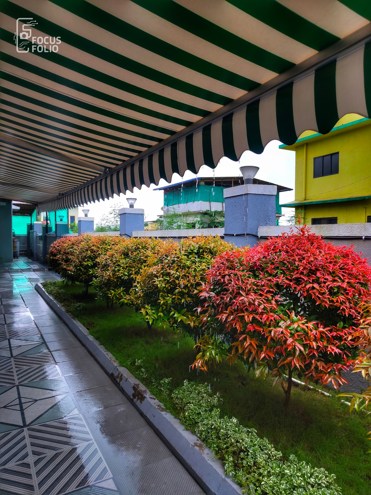
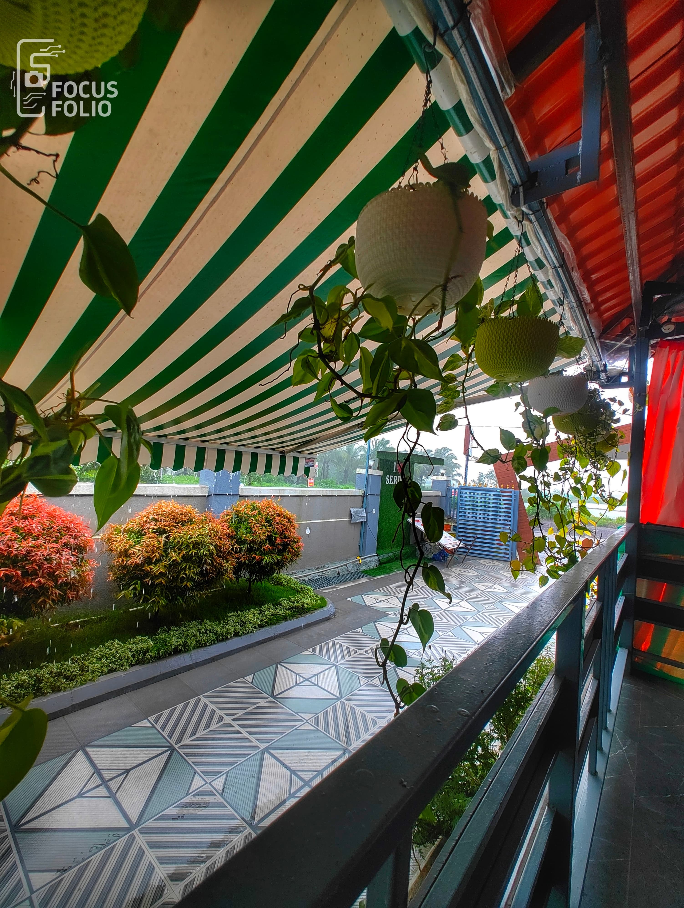
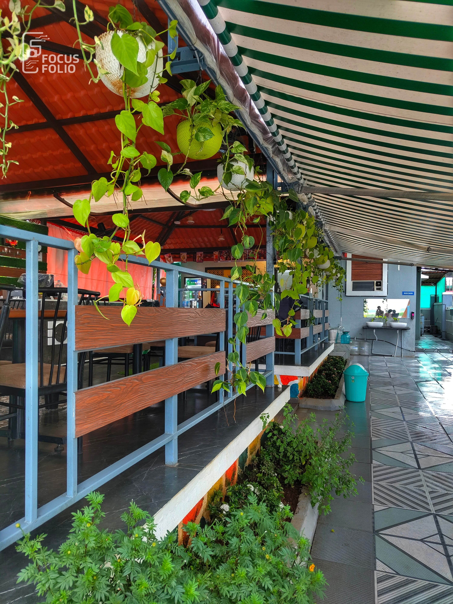
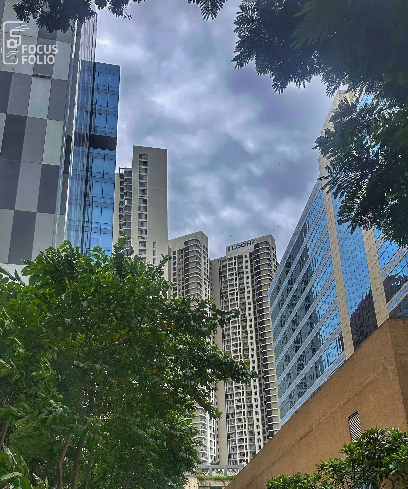
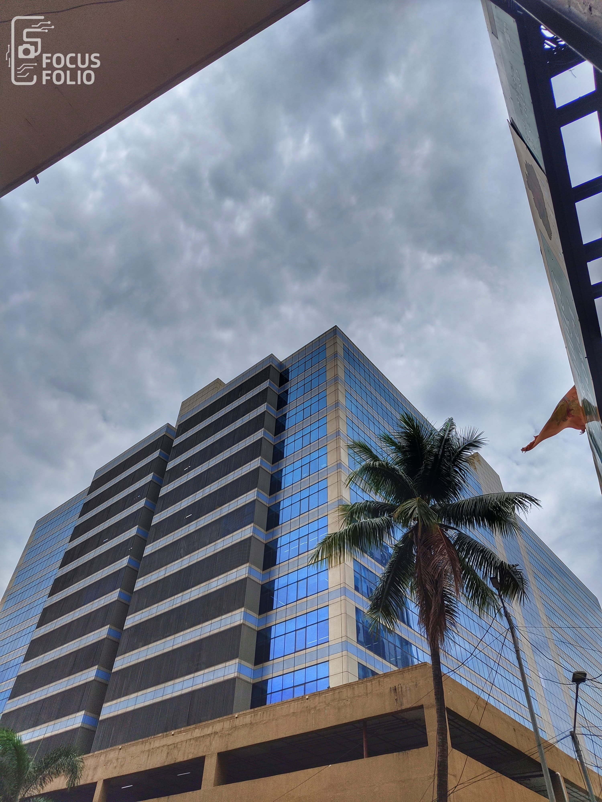
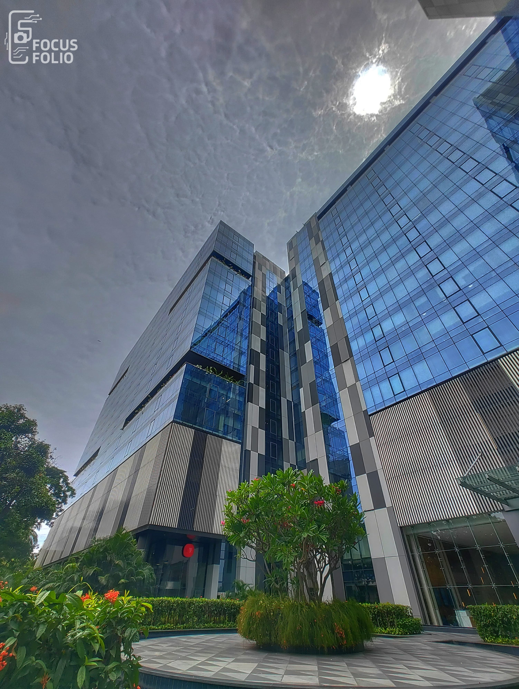
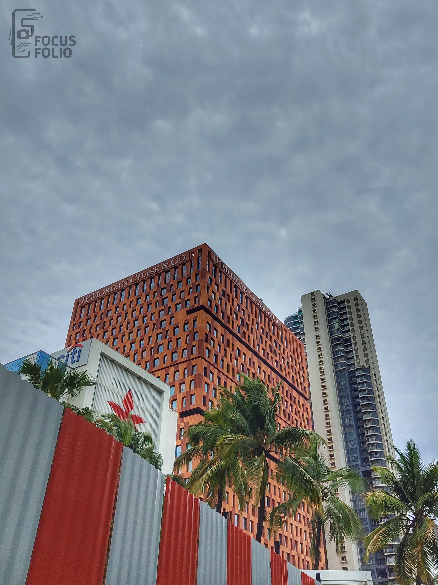
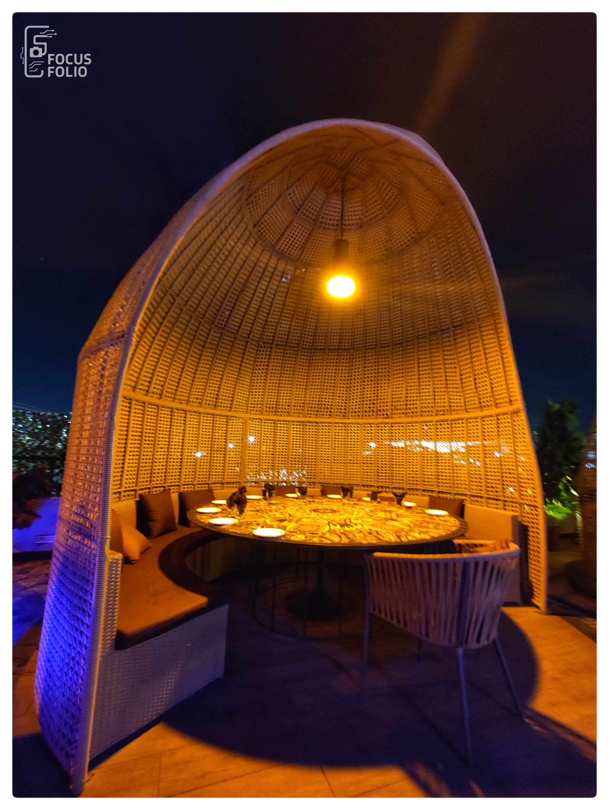

Flags of Faith – Heritage Framed by Sky

Garden Geometry – A Curated Corner of Calm

Green Trails – Walkway of Harmony and Design

Breezy Vibes – Outdoor Cafés with a Soul

Urban Giants – Skyscrapers Amidst the Green

Blue Mirror – Reflections of Ambition in Glass

Symmetry Speaks – Where Lines Meet Dreams
Corporate Canvas – Red Brick Strength

Layered Living – Textures of Modernity

Dome of Dine – Cozy Spaces Under the Stars